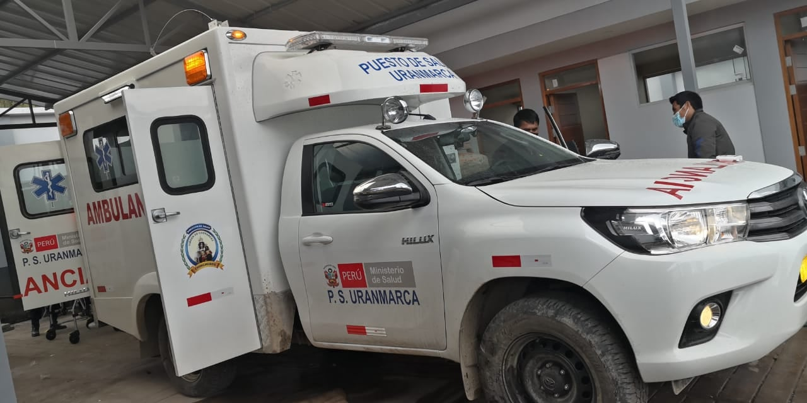
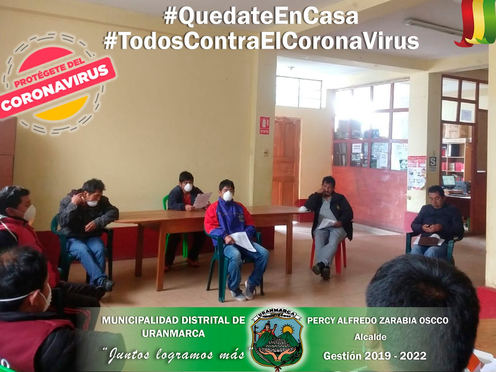

-
Ampliación y mejoramiento de los servicios de salud de los puestos de salud de Uranmarca
El día Martes 20 del presente mes en el PP. SS del Distrito de Uranmarca, se hace la verificación y aprobación de una Ambulancia rural Tipo 1.
-
LA MUNICIPALIDAD DISTRITAL DE URANMARCA LLEVO A CABO LA REUNIÓN MULTISECTORIAL CON PARTICIPACIÓN DE AUTORIDADES E INSTITUCIONES DEL DISTRITO
Bajo la convocatoria del señor alcalde de la Municipalidad Distrital de Uranmarca se desarrolló la reunión multisectorial con la finalidad de Conformar la comisión de identificación y empadronamiento de las personas vulnerables que serán beneficiadas con la canasta básica familiar